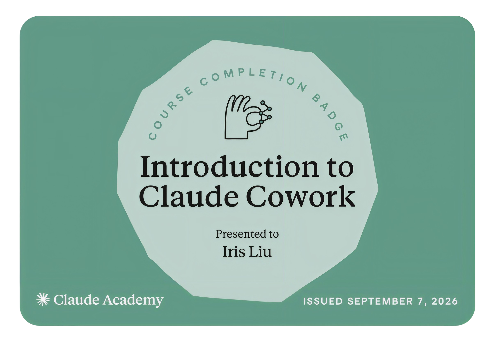
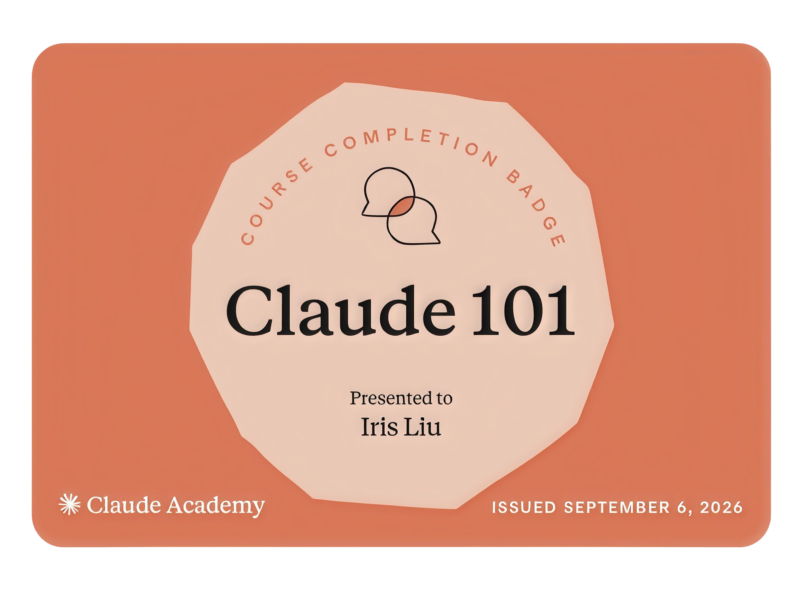

UI / UX
建構完整並可延續優化的設計，每一份專案都遵循 Design Thinking 發想設計。
從專案背景故事、競品搜集與分析至使用者體驗研究、User Needs 以及規範出優化範圍和資訊架構直到最後的 Wireframe, Design system 和高保真設計圖，過程中每一步都非常扎實。
TOOLKIT
FigmaClaude codeUser researchWireframeIAUserflow
Hi I am Iris 劉冠萱
我的個性積極、用心負責任、善良（有時候會有點俏皮），喜歡探索生活、分享生活，下班後的興趣是健身重訓、最期待的事情是安排下一趟可以探索更多城市文化的旅遊。
過去四年在台北花藝設計公司製作花藝時，接觸許多使用異材質結合的媒材設計，從觀賞短暫新鮮的花朵到長期擺放的植物裝置藝術，以及與不同商業領域的客戶合作，讓我從生活美學為起點，探索更多與使用者思考、生活體驗相關的事物，不同的故事背景製作每一件作品，從此開始投入 UI / UX 設計並透過數位媒體表達更多層次的想法。
在不同階段滋養我的成長痕跡，每一次的創作都是不同層次的思維疊加
建構完整並可延續優化的設計，每一份專案都遵循 Design Thinking 發想設計。
從專案背景故事、競品搜集與分析至使用者體驗研究、User Needs 以及規範出優化範圍和資訊架構直到最後的 Wireframe, Design system 和高保真設計圖，過程中每一步都非常扎實。


AI 工具發展快速的時代，不斷了解並學習使用新工具，幫助我提升作品品質及完成效率。
天馬行空的發想與日常真實穿戴的衝突。
在每一季快速替換前，我們搜集下一季流行的色彩計劃資料與服裝結構的挑戰，在日常服裝之間創造更多實驗性與故事性的作品。
花朵如同布料般擁有不同色彩、光澤及質地，透過一次次的搭配、嘗試、紀錄，讓植物融入日常的時間更多、接觸到的民眾和用途更廣，進而在創作與生活與商業中達到一個平衡。